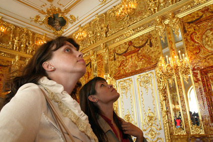

The Amber Room
One of the most beautiful and mysterious works of architectural art ever made by man was the Amber Room that once was the jewel of Russia. Commissioned in 1701 by the King of Prussia, the room made of amber was originally built to be part of Charlottenburg Palace. However, as a gift of political alliance, King Frederick William I gave the Amber Room to Peter I in 1716. This treasure would remain in Russia until 1945, when it was stolen and then forever lost during World War II. The story of this amazing craftsmen and artistic accomplishment along with its unfortunate loss is one that still intrigues many throughout the world.
Construction Of The Amber Room
It is rumored that the wife of the Prussian King Friedrich I, Sophie Charlotte, was the first to urge the construction of the Amber Room for their home at Charlottenburg Palace. The King took on the project with gusto and commissioned the German architect and sculptor Andreas Schlüter and Gottfried Wolfram, a Danish amber craftsman, to create what would be one of the most intricate and impressive examples of amber art ever crafted. These artists worked on the project until 1707, when Gottfried Turau and Ernst Schacht took over completion of the amber masterpiece.
Construction of the Amber Room would take over 10 years, over 6 tons of amber and unknown amounts of labor hours. However, King Friedrich I would never see the project come to full fruition. The King died in 1713, and though almost complete, construction of the room was brought to a halt for three years under the rule of his son, Frederick William I. It was then that the room was viewed by Peter I during a visit in 1716 and given as a gift of political alliance between Prussia and Russia against Sweden. The panels of the room were packed and shipped in chests to the Russian Winter Palace, then moved to the Summer Palace where they remained dissembled and largely forgotten. The project was finally resurrected and completed in 1755 by orders of Czarina Elizabeth in the Catherine Palace in Tsarskoye Selo.
After almost seventy years, in 1770 the Amber Room was complete. Catherine II ensured that painted panels were replaced with amber panels and many enhancements were done to create a true work of art. There were Florentine mosaics added, with semi-precious gemstones. The room housed amber works of art from all over, glowing with the light from 565 candles that brought the entire room to life. Although there would be other changes and additions to the room over the next century, for all intents and purposes, it was finally finished. It is thought to be monetarily valued at least $142 million by today’s standards, though most would agree that it would be considered priceless as a piece of history and art.
Stolen And Lost
The beautiful room made of amber and semi-precious gems would remain in Tsarskoye Selo at the palace until the onslaught of the Nazi invasion in 1941. While most artworks were removed to be hidden from the invading Germans, the Amber Room was considered too fragile to be moved. It was hidden under false wall papering, but this disguise was not enough to fool the Nazis, who dissembled the room in a reported 36 hour time period and shipped it in 27 crates to the Königsberg Castle in Germany.
The panels were installed in the castle museum and were known to be exhibited until at least late in the year of 1943, possibly until the castle fell in 1945 to air raids. However, the mystery is that no one can for certain know whether the room was still in the castle when it was bombed and burned. It was reported to have already been dissembled to move and may have been transported elsewhere before the Soviet Union regained control of Königsberg. Theories range from the panels being lost in a sunken ship in the Baltic Sea to hidden in bunkers below the city. However, at least one of the stone mosaics and a chest from the room has been recovered, giving hope that more pieces are out there, still hidden.
Although the Amber Room was lost, reconstruction of the room began in 1979 and was finished in 2003. The recreation is available to the public at the Tsarskoye Selo State Museum Reserve, which is outside of the city of St. Petersburg. Although it will never be the same as the original, it is a great monument to the history of the country and was dedicated to the 300-year anniversary of St. Petersburg.